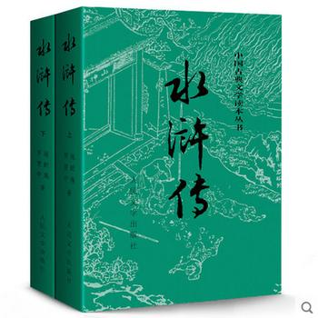

《水浒传》是由中央电视台与中国电视剧制作中心联合出品，根据元末明初施耐庵的同名小说改编。 [1] 由张绍林执导，杨争光 、冉平改编，李雪健、周野芒、臧金生、丁海峰、赵小锐、杨猛等主演的43集电视连续剧。
该剧讲述的是宋朝宋徽宗时期皇帝昏庸、奸臣当道、官府腐败、贪官污吏陷害忠良，弄得民不聊生，许多正直善良的人被官府逼得无路可走，被迫奋起反抗，最终108条好汉聚义梁山泊，但随后宋江对朝廷的投降使得一场轰轰烈烈的农民起义最后走向失败的故事。 [2]
《水浒传》于1998年1月8日在中央电视台一套首播。 [3]
2018年9月8日，9月15日，9月22日，央视四台《中国文艺》“向经典致敬”栏目播出《水浒传》20周年聚首专题节目（上），（中），（下）。
北宋末年，宋徽宗在位时期，天下瘟疫流行，官府无道，官逼民反。在梁山泊聚集起来自江湖上的许多英雄好汉，打州劫府、济困扶贫、严重动摇了北宋朝廷的统治，但宋江对朝廷的投降导致了梁山农民起义最终走向失败的悲惨结局。
《水浒传》于1998年1月8日在中央电视台一套首播。 [3]
2018年9月8日，9月15日，9月22日，央视四台《中国文艺》“向经典致敬”栏目播出《水浒传》20周年聚首专题节目（上），（中），（下）。
北宋末年，宋徽宗在位时期，天下瘟疫流行，官府无道，官逼民反。在梁山泊聚集起来自江湖上的许多英雄好汉，打州劫府、济困扶贫、严重动摇了北宋朝廷的统治，但宋江对朝廷的投降导致了梁山农民起义最终走向失败的悲惨结局。